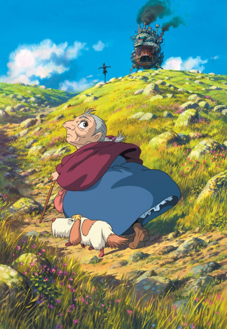

🪄 Fantasia
Black Clover

Asta e Yuno são órfãos criados juntos e compartilham o sonho de se tornarem o Rei Mago, o maior feiticeiro do reino. Enquanto Yuno demonstra talento excepcional para a magia, Asta nasceu sem qualquer poder mágico — algo inédito. Determinado a superar seus limites, Asta recebe um misterioso grimório de trevo de cinco folhas e embarca numa jornada repleta de batalhas, rivalidades e descobertas sobre o próprio destino.
Fairy Tail

Em um mundo dominado por magia, Lucy Heartfilia sonha em se tornar uma grande maga e entra para a Fairy Tail, a guilda mais famosa — e caótica — de Fiore. Ao lado de Natsu, um mago do fogo criado por um dragão, e outros aliados excêntricos, ela vive missões perigosas e emocionantes enquanto a guilda enfrenta inimigos poderosos e mistérios que ameaçam o equilíbrio do mundo.
Frieren e a Jornada Para o Além (Sousou no Frieren)

Após derrotar o Rei Demônio, a elfa maga Frieren percebe que seus companheiros humanos têm vidas fugazes diante de sua longa existência. Anos depois, ela decide viajar pelo mundo para compreender melhor as emoções humanas e honrar as memórias de seus antigos amigos. Em uma jornada sensível e contemplativa, Frieren enfrenta novos desafios enquanto aprende o verdadeiro valor do tempo e das conexões.
Dungeon Meshi (Delicious in Dungeon)

Quando uma equipe de aventureiros perde um de seus membros para um dragão em uma masmorra, Laios decide resgatá-la antes que seja devorada — mas sem recursos, eles precisam sobreviver comendo os monstros que encontram pelo caminho. Combinando fantasia e culinária de forma divertida, a série acompanha o grupo enquanto descobre receitas improváveis e enfrenta perigos subterrâneos.
Howl’s Moving Castle (O Castelo Animado)
Sophie, uma jovem que vive uma vida simples, é amaldiçoada por uma bruxa e transformada em uma senhora de idade. Buscando reverter o feitiço, ela acaba encontrando o misterioso mago Howl e seu castelo ambulante. Em meio a guerras, magia e descobertas pessoais, Sophie embarca em uma aventura encantadora que explora coragem, amor e autoaceitação.